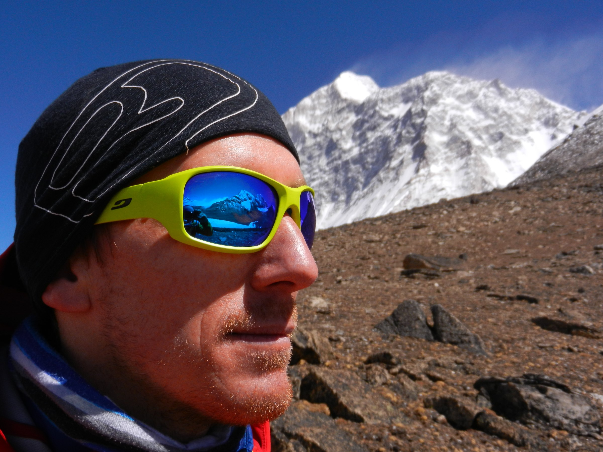
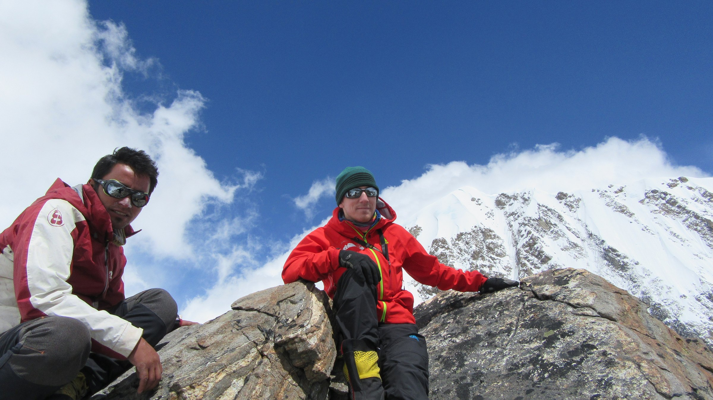
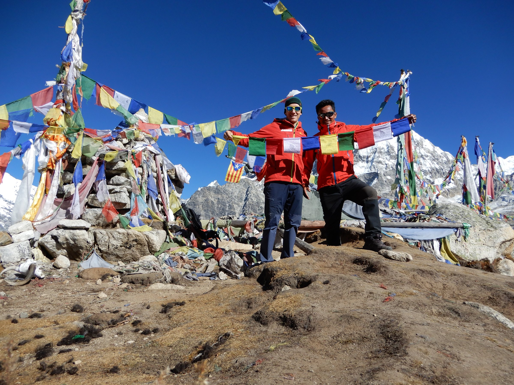
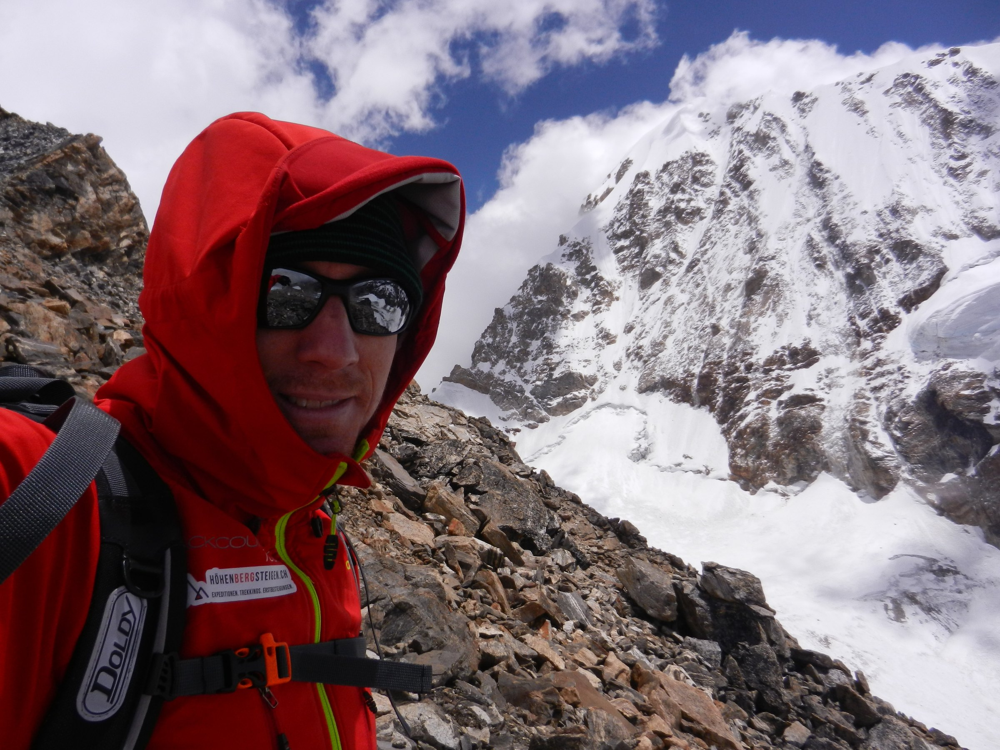
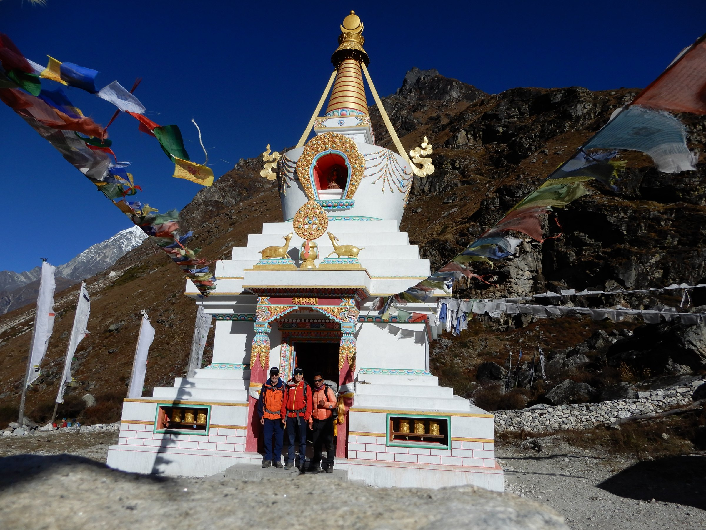

6000–8000 M
EXPEDITIONEN

HÖHENBERGSTEIGEN · SEIT ÜBER 20 JAHREN
An den Berg. An die Menschen.
An das, was bleibt.
DAS IST HÖHENBERGSTEIGEN
Aus Bergen wurden Freundschaften. Aus Reisen wurden Beziehungen. Aus Beziehungen entstand Verantwortung.
Seit über zwei Jahrzehnten sind wir in grossen Höhen und abgelegenen Regionen unterwegs. Nicht als Zuschauer – sondern mit Menschen, die über Jahre zu Partnern und Freunden wurden.


Nepal. Pakistan. Kirgistan. Kamtschatka. Hohe Gipfel, lange Wege und Begegnungen, die weit über eine Reise hinausreichen.
WOHIN ES UNS ZIEHT
Keine Produktkacheln. Keine Reise von der Stange. Sechs Türen in sechs Welten.
EXPEDITIONEN
TREKKING · BERGE · HINDUISMUS
TREKKING · BERGE · ISLAM · KULTUR
TREKKING · NATUR · NOMADENKULTUR
VULKANE · KAMTSCHATKA
INDIVIDUELLE REISEN

DER UNTERSCHIED
«Die grössten Erlebnisse entstehen dort, wo Begegnung möglich wird.»
Wir reisen nicht an Menschen vorbei. Wir arbeiten mit lokalen Partnern, essen zusammen, lachen zusammen, lösen Probleme zusammen. Genau daraus entstehen Reisen, an die man sich Jahre später noch erinnert.

WIRKUNG VOR ORT
Erträge unserer Reisen unterstützen Familien, Schulen, Ausbildung und lokale Projekte. Nicht als Marketing-Zusatz, sondern weil aus langjährigen Beziehungen Verantwortung entstanden ist.




UND JETZT?
Keine Katalognummer. Kein Standardpaket. Schreib uns, was dich reizt.
info@hohenbergsteigen.com ↗